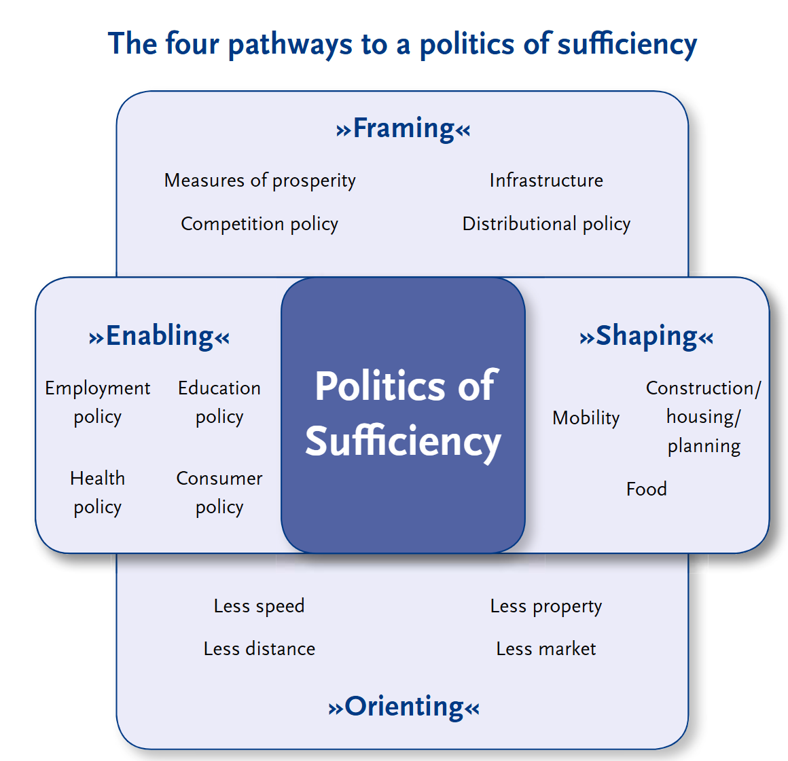
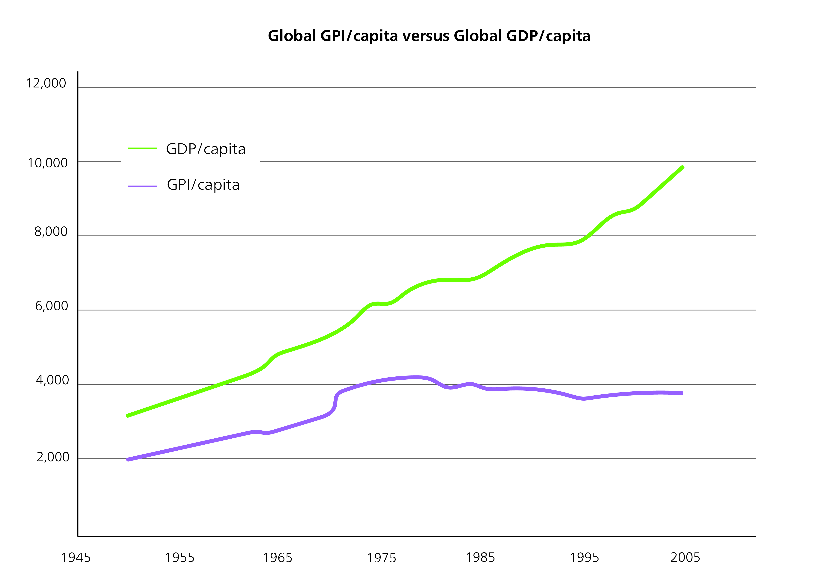

Post-growth societies
The post-growth debate emerged from concerns raised in the 1970s, after publication of the influential Meadows Report, The Limits to Growth [-@meadowsLimitsGrowthReport1972a]. As previously mentioned, this report highlighted the Earth’s finite capacity to sustain humanity in the face of unrestrained economic growth.
The post-growth debate advocates qualitative growth or even zero growth, and criticizes the effects of the “modern” economy and lifestyles (e.g. Binswanger 1985). It argues that the compulsion for constant growth is making us exceed ecological limits and leading to negative social and ecological consequences. “Ecological economics” is an important concept in this respect, as it aims to develop alternative models and approaches for evaluating economic growth.
The dilemma in this debate is that most approaches to a sustainable economy assume that a growth-independent economy should not be profit-driven. However, capitalist economies are existentially dependent on growth [e.g. @binswangerWachstumszwangWarumVolkswirtschaft2019, @oberholzerWieBringenWir2021]. This dilemma is key to the question of how to organize a successful transition from the current unsustainable system to a sustainable economic and social system. One main approach is to reduce dependencies on growth and promote alternative models that focus on sufficiency, without neglecting strategies that focus on efficiency and consistency. This requires changes in production and consumption patterns, in social norms, and in the political framework. The post-growth debate emphasizes the need for a comprehensive transformation that encompasses environmental, social, and economic dimensions – and aims to achieve a balance between human needs and planetary boundaries.
The concept of “sufficiency” is an integral part of the post-growth debate [@schneidewindDamitGutesLeben2013]. Sufficiency aims to reduce overconsumption and promote alternative lifestyles, consumption habits, and production patterns. To promote widespread adoption of sufficiency, a legal and institutional framework that incentivizes and facilitates sufficiency-oriented practices is necessary.

A policy to promote sufficiency can actively shape our choices, through attractive sufficiency-oriented offers and services. It can also foster awareness and provide guidance for adopting sufficiency-oriented lifestyles and practices. This comprehensive approach aims to shift consumption towards what is necessary and meaningful, ultimately reducing excessive resource use.
Conclusion
Post-growth debates analyse and criticize modern society’s dependency on economic growth, and the negative environmental and social effects of this growth. Rather than focus solely on technological progress and market forces, post-growth society theories strive for changes in society, structures, and institutional frameworks. Overall, post-growth debates emphasize the need for sustainable approaches to achieve a comprehensive transformation of the economy and society. Transformation to a post-growth society requires a reorientation of values, structures, and institutional frameworks. The challenge is to find ways to shape the transition to an economy independent of growth, while at the same time ensuring social justice and ecological sustainability.
Critics of post-growth debates argue that a rejection of economic growth could have a negative impact on prosperity and social progress. They fear that an economy independent of growth could lead to stagnating innovation, fewer jobs, and falling living standards. And they point out that a negative attitude towards economic growth can have potential negative effects. Constructively addressing the challenges of growth and developing viable alternatives are important aspects of enabling sustainable and equitable change.
Indicators for Sustainable Development: From Principles to Practice
A key concern of sustainable development is the ability to systematically make visible both progress and setbacks—on global, national, and local levels. Indicators play a crucial role in this effort: they help capture complex socio-ecological realities, enable comparability, and support evidence-based policymaking. Precisely because sustainability is a normative objective, particular attention must be paid to the selection, design, and use of indicators.
Importantly, indicators are not purely technical measurement tools. They inevitably reflect specific values, worldviews, and political goals. Their significance is not solely based on “objective data”, but also on decisions about what should be measured, how, and for what purpose. For instance, Gross Domestic Product (GDP) has long dominated as the main benchmark for economic success—despite ignoring ecological damage, social inequality, unpaid care work, and ecosystem services.
In sustainability science and environmental policy, a useful distinction has emerged between different types of indicators, each serving a specific function [@devriesConceptsMethodsIndicators2024]:
State indicators describe the condition of a system or resource—such as CO₂ concentration in the atmosphere, the proportion of protected forest area, or average life expectancy. These are primarily used to monitor trends and system states.
Causal indicators capture underlying drivers or influencing factors that lead to changes within a system. These include, for example, fossil fuel consumption or socio-economic drivers like urbanization rates or consumption patterns.
Input or intervention indicators refer to institutional or policy measures that are introduced in response to problems. Examples include subsidies for renewable energy, legal regulations, or public awareness campaigns. They track the presence and nature of interventions.
Performance or output indicators measure the results or impacts of these interventions in relation to predefined goals. These may include emission reductions, the share of recycled materials, or progress in social justice.
This classification illustrates that individual indicators often lack significance in isolation. It is the interaction of indicators—e.g., within impact models or causal frameworks—that enables a robust assessment of sustainability trends and policy responses.
Over the past decades, a wide range of alternative indicator systems has been developed to provide a more comprehensive picture of societal development beyond GDP. These approaches aim to integrate economic, social, and environmental dimensions while making distributional and non-market contributions visible.
A significant milestone was the development of the Human Development Index (HDI) by the United Nations Development Programme (UNDP) in the 1990ies. The HDI combines three dimensions: life expectancy at birth (as a proxy for health), average and expected years of schooling (education), and per capita income adjusted for purchasing power (material living standard). The HDI sought to broaden the narrow monetary focus of GDP by offering a capability-based understanding of development as “the expansion of people’s choices” (Sen, 1999). Today, it remains a standard reference in development economics (see UNDP Human Development Reports since 1990).
A more advanced approach is the Genuine Progress Indicator (GPI), which starts with personal consumption (as GDP does) but adjusts for external costs such as environmental degradation, resource use, crime, and income inequality to reveal trade-offs between costs and benefits of economic growth. It also adds value for unpaid services like domestic work and volunteering. First proposed by Daly and Cobb (1989) as Sustainable Economic Welfare (ISEW), the GPI is well established in ecological economics [see @talberthGenuineProgressIndicator2007a]. Unlike GDP, which typically increases over time, the GPI has stagnated or declined in many high-income countries since the 1980s—indicating a possible decoupling between growth and well-being.

Another commonly used measure is the Ecological Footprint, which translates human resource use into global hectares. It represents the biologically productive area needed to meet the resource demand of an individual, region, or country—including land for food production, settlement, and carbon absorption. Developed by @wackernagelOurEcologicalFootprint1996 and promoted by the Global Footprint Network, it is especially prevalent in environmental education. The Ecological Footprint illustrates whether a population is living within its ecological means—i.e., whether it exceeds its fair share of global biocapacity.

The Happy Planet Index (HPI) offers a more subjective approach, combining life satisfaction (survey-based), life expectancy, and ecological footprint to calculate “wellbeing per unit of environmental input”. Developed by the New Economics Foundation, the HPI shows that high life satisfaction does not necessarily require high resource consumption. Middle-income countries like Costa Rica often score higher than industrialized nations with unsustainable consumption patterns (NEF, 2006).
In the German-speaking world, the National Welfare Index (NWI) has been introduced as a GPI-based tool adapted to national data availability. It includes dimensions such as income distribution, environmental burden, and health costs. Initially developed by the Institute for Ecological Economy Research (IÖW) and the Environmental Policy Research Centre (FFU) at FU Berlin, the NWI has been tested in several German federal states [@diefenbacherWoranSichWohlstand2011].
Another particularly relevant measure is the Multidimensional Poverty Index (MPI), developed by the Oxford Poverty and Human Development Initiative (OPHI) in collaboration with the UNDP. It captures poverty across three core dimensions: health, education, and standard of living. Indicators include child mortality, school attendance, access to electricity, and housing conditions. Unlike income-based measures, the MPI provides a nuanced understanding of deprivation across overlapping dimensions. @baderEconomicGrowthIncreasing2017 demonstrate the value of the MPI in a longitudinal study on poverty in the Lao PDR, showing how rapid economic growth reduced income poverty while simultaneously exacerbating disparities in education, infrastructure, and health access.
The Ecological Footprint measures how much biologically productive land and sea area (in global hectares) is required to sustain the resource use of an individual, population, or country over time. It includes land required for CO₂ absorption, food production, infrastructure, and other human needs. The concept was developed in the 1990ies by Mathis Wackernagel and William Rees and has become one of the most widely recognized tools for environmental communication.
The Ecological Footprint is often used in public awareness campaigns, notably in connection with the annually published Earth Overshoot Day—the symbolic date when humanity’s resource consumption exceeds Earth’s capacity to regenerate those resources in the same year.
Main limitations of the indicator based on @globalfootprintnetworkEcologicalFootprintAccounting2020:
Non-ecological aspects of sustainability: having a footprint smaller than the biosphere is a necessary minimum condition for a sustainable society, but it is not sufficient. For instance, the ecological footprint does not consider social well-being. In addition, on the resource side, even if the ecological footprint is within biocapacity, poor management can still lead to depletion. A footprint smaller than biocapacity is merely a necessary condition for making quality improvements replicable and scalable.
Depletion of non-renewable resources: the footprint does not track the amount of non-renewable resource stocks, such as oil, natural gas, coal or metal deposits. The footprint associated with these materials is based on the regenerative capacity used or compromised by their extraction and, in the case of fossil fuels, the area required to assimilate the wastes they generate.
Inherently unsustainable activities: activities that are inherently unsustainable, such as the release of heavy metals, radioactive materials and persistent synthetic compounds (e.g. chlordane, polychlorinated biphenyls (PCBs), chlorofluorocarbons (CFCs), polyvinyl chloride (PVC), dioxins, etc.), do not enter directly into footprint calculations. These are activities that need to be phased out independently of their quantity (there is no biocapacity budget for using them). Where these substances cause a loss of biocapacity, however, their influence can be seen.
Ecological degradation: the footprint does not directly measure ecological degradation, such as increased soil salinity from irrigation, which could affect future bioproductivity. However, if degradation leads to reductions in bioproductivity, then this loss is captured when measuring biocapacity in the future. Moreover, by looking at only the aggregate figure, ‘under-exploitation’ in one area (e.g. forests) can hide over-exploitation in another area (e.g. fisheries).
Resilience of ecosystems: footprint accounts do not identify where and in what way the capacity of ecosystems are vulnerable or resilient. The footprint is merely an outcome measure documenting how much of the biosphere is being used compared with how productive it is.
Despite these limitations, the Ecological Footprint remains a useful entry point for engaging broader audiences in discussions on global ecological justice and planetary responsibility—especially in educational and communication settings.
Between Simplification and Complexity: Interactions Between SDGs
A central challenge in designing sustainability indicators lies in balancing simplification with complexity. Indicators are intended to support decision-making, yet must account for a wide array of interactions, uncertainties, and contextual dependencies.
This is particularly evident in the 2030 Agenda for Sustainable Development. While the Agenda includes 17 distinct goals and numerous sub-targets, these goals do not exist in isolation. Rather, they are intricately interconnected: progress in one area may reinforce, neutralize, or hinder progress in another. Consequently, indicators that illuminate these relationships are essential for coherent policy design.
@breuWhereBeginDefining2020 present a methodology based on the interactions framework developed by @nilssonMapInteractionsSustainable2016, which systematically classifies the relationships between SDGs on a seven-point scale: from strongly negative (–3) to strongly positive (+3). They applied this approach to Switzerland’s national sustainability framework, revealing areas where policy actions toward one SDG may support or conflict with others. For example, measures to reduce poverty (SDG 1) could conflict with biodiversity goals (SDG 15) if not designed to be environmentally sustainable.